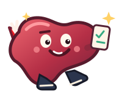

Transplant follow-up
Follow-up visit tomorrow.
Know what to ask.
Moxie is personal to Alex. This demo shows how, with Alex’s permission, it could read Alex’s own MyChart records and help prepare a question for the transplant team.

Simulated MyChart connection · no real patient dataThis walkthrough is not connected to any account.
01 / Meet Alex
Tomorrow’s follow-up
Alex has a transplant follow-up tomorrow. This example shows the records Alex would give Moxie permission to read.
CaptionsSelect Start narrated demo to begin.
0:00 / –:––